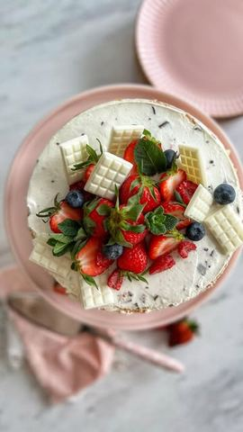

Torta sa jagodama gotova za 10 minuta

Moja beleška
SačuvanoNekada nam je prosto potrebno da za svega 10 minuta imamo spremnu sočnu i laganu tortu. Bez pečenja, sa gotovim korama, sa svežim sezonskim voćem, ako uz to dodamo i malo ukusne čokolade, ne ostane ni parčence viška. Zato što smo neiskusne u spremanju, zato sto smo u žurbi ili prosto zato što nam se tako nekad hoće 🤗🤗
Sastojci
- Sastojci
- Fil
Priprema
Jedini posao koji imate jeste da lepo operete i iseckate jagode, iseckate čokoladu na sitnije kockice. Umutite mikserom krem sir sa šećerom u prahu, tome dodate slatku pavlaku pa nastavite mućenje. Pred kraj dodate kremfix kako bi smesa bila čvršća, umutite pa dodate seckanu čokoladu. Povežite smesu lagano spatulom. Ređate - kora (pa pospite 30 ml mleka) - fil, polovina jagoda - kora (pa pospite 30 ml mleka) - fil - druga polovina jagoda - kora sa ostatkom mleka i još malo fila. Ja sam ređala u podesivom kalupu, pa sam torticu ostavila u frižideru preko noći. Sutradan možete dodati još koju svežu voćkicu preko i verujte mi na reč, ako vikend provodite sa prijateljima, onda je ovo ona tortica od koje u ponedeljak neće ostati ni parčence za uz kafu 😅🤗
Originalni opis sa Instagrama
Torta sa jagodama gotova za 10 minuta 🍓🍓🍓 Nekada nam je prosto potrebno da za svega 10 minuta imamo spremnu sočnu i laganu tortu. Bez pečenja, sa gotovim korama, sa svežim sezonskim voćem, ako uz to dodamo i malo ukusne čokolade, ne ostane ni parčence viška. Zato što smo neiskusne u spremanju, zato sto smo u žurbi ili prosto zato što nam se tako nekad hoće 🤗🤗 Sastojci: •pakovanje gotovih okruglih kora •90 ml mleka Fil: •400 gr krem sira •100 gr šećera u prahu •400 ml slatke pavlake •1 kremfix •čokolada sa ukusnog jagoda i jogurta •400 gr svežih seckanih jagoda •Još malo svežeg voća za dekoraciju 🍓🫐🍒 Jedini posao koji imate jeste da lepo operete i iseckate jagode, iseckate čokoladu na sitnije kockice. Umutite mikserom krem sir sa šećerom u prahu, tome dodate slatku pavlaku pa nastavite mućenje. Pred kraj dodate kremfix kako bi smesa bila čvršća, umutite pa dodate seckanu čokoladu. Povežite smesu lagano spatulom. Ređate - kora (pa pospite 30 ml mleka) - fil, polovina jagoda - kora (pa pospite 30 ml mleka) - fil - druga polovina jagoda - kora sa ostatkom mleka i još malo fila. Ja sam ređala u podesivom kalupu, pa sam torticu ostavila u frižideru preko noći. Sutradan možete dodati još koju svežu voćkicu preko i verujte mi na reč, ako vikend provodite sa prijateljima, onda je ovo ona tortica od koje u ponedeljak neće ostati ni parčence za uz kafu 😅🤗 • • • #torta #tortasajagodama #nepecenatorta #brzatorta #tortabezpecenja #idejezadezert #slatkisi #brzoilako #ukusnoibrzo #slatkirecepti #mojirecepti #strawberrycake #dessertporn #10minutedessert #deliciouscake